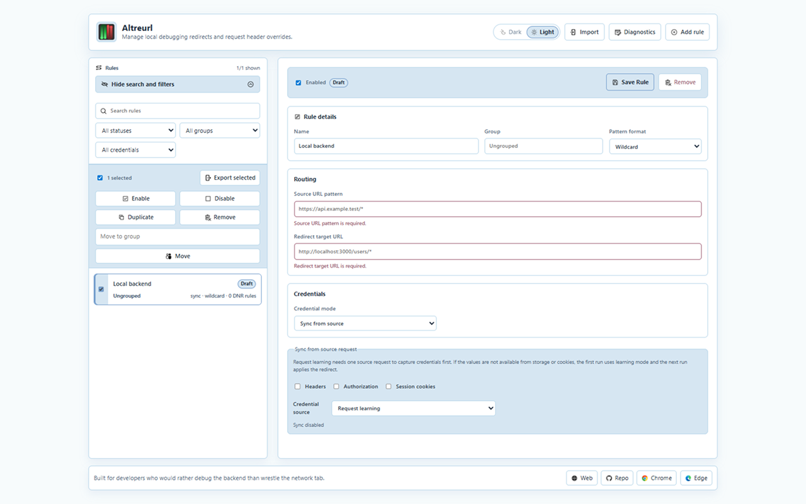

Redirect by pattern
Use wildcard rules for simple paths or regex rules for capture groups to precisely target and reroute API calls to your local environment.
Altreurl helps backend developers redirect API calls, forward debugging credentials, and switch rules from the browser without changing application code.

Core workflow
Use wildcard rules for simple paths or regex rules for capture groups to precisely target and reroute API calls to your local environment.
Add Authorization and custom headers when local services need explicit context.
Sync selected headers, bearer tokens, cookies, or storage values from source requests.
The popup intelligently shows rules only for the current active tab and lets you enable or disable them with a single click, without leaving your context.
Preview changes, handle conflicts, and redact sensitive credentials automatically before sharing rule configuration files with your team.
Review dynamic rule state and local logs when a setup behaves unexpectedly.
Interface preview

Create a source pattern, choose the local target, then decide whether credentials should be manual or synced from the source request. It's that simple.
Altreurl stores rules, synced values, and diagnostics locally. Exports happen only when you create them.
Read privacy policy